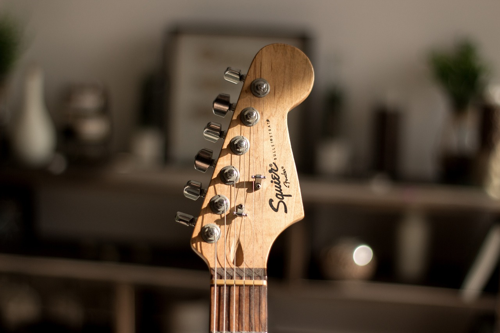

Kitarakeskus - Intohimosta musiikkiin
Tervetuloa Kitarakeskukseen, Suomen inspiroivimpaan kitaroiden verkkokauppaan. Me emme vain myy instrumentteja; me autamme muusikoita - niin aloittelijoita kuin ammattilaisia - löytämään oman äänensä.
Kitarakeskus - Intohimosta musiikkiin
Kitarakeskus syntyi yksinkertaisesta ajatuksesta: halusta tarjota laadukkaita instrumentteja, asiantuntevaa palvelua ja vaivaton ostokokemus suoraan kotisohvalle. Me uskomme, että jokainen ansaitsee soittimen, joka tuntuu hyvältä, näyttää upealta ja kuulostaa vielä paremmalta.
Miksi valita Kitarakeskus?
Kitarakeskuksessa tinkimätön laatu ja aito asiantuntemus kohtaavat. Kuratoimme valikoimamme suurella sydämellä varmistaaksemme, että jokainen soitin – aina ensimmäisestä akustisesta ammattitason sähkökitaraan – täyttää korkeat laatustandardimme.
Lupauksemme sinulle
Me Kitarakeskuksessa haluamme madaltaa kynnystä aloittaa uusi harrastus ja tarjota kokeneille soittajille välineet, jotka vievät heidät uudelle tasolle. Meille jokainen asiakas on tärkeä, ja tavoitteemme on, että olet 100-prosenttisen tyytyväinen uuteen kitaraasi.
Oletko valmis aloittamaan matkasi?
Ota yhteyttä